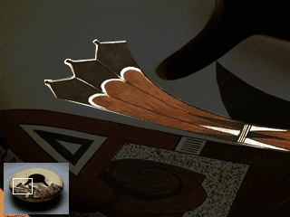

Let's look a little closer . . .
I called this CERAMIC VESSEL a "seed jar." Jars like this were used in the past for storing seeds for the next year's planting.
The images on the seed jar are also very important to the people.
Remember, the MESAS where the HOPI-TEWA live are ARID lands.
What do plants need to be able to grow and be healthy?
Water. Which is scarce in an arid climate.
The need for water helps explain why the Nampeyo family uses feather and wing MOTIFS on their pottery pieces.
Birds, especially eagles, play an important CEREMONIAL role in the life of the Hopi.
They believe the SPIRIT of the eagle carries a prayer for rain to the gods on behalf of the people.